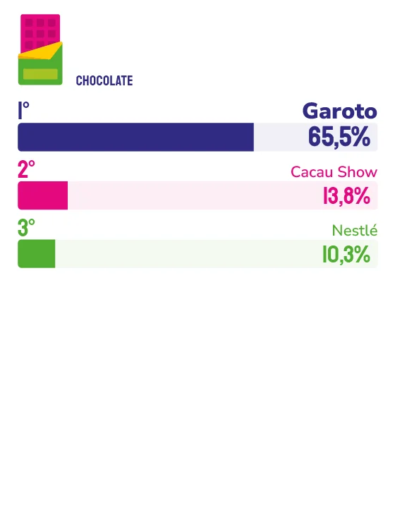

CHOCOLATE e INDÚSTRIA CAPIXABA
Presente na vida das famílias capixabas há quase um século, Garoto soma museu, corrida de rua e inovação de portfólio, unindo consumo e experiência no Espírito Santo.
Há quase 100 anos no Espírito Santo, a Garoto cresceu ao lado do estado até ocupar um espaço que vai além das prateleiras de supermercado: hoje a fábrica conta com museu, corrida de rua, portfólio em expansão e um papel reconhecido na economia capixaba. É esse conjunto de produto, indústria e experiência que sustenta uma relação de quase um século com o consumidor local.
“Nossa relação com o Espírito Santo vai além da presença comercial. A Garoto nasceu aqui, cresceu junto com o estado e continua investindo em iniciativas que fortalecem esse vínculo”, afirma o diretor da Fábrica Garoto, Fabiano Marins. “Iniciativas como a Dez Milhas Garoto e as experiências oferecidas no Museu Garoto reforçam essa conexão com a comunidade. É uma combinação única que vai além de ter uma origem capixaba, a história construída ao longo de quase 100 anos e ações que unem produto, turismo, esporte e experiências, fortalecendo uma relação contínua com os consumidores.”
Para a gerente de Marketing da marca, Priscilla Caselatto, essa presença não é acaso, mas resultado de investimento constante. “A lembrança espontânea não acontece de uma hora para outra, é resultado de uma construção e investimento constante em qualidade e experiência, além da memória afetiva que, acreditamos, a Garoto tem na vida das pessoas. Nossos produtos atravessaram gerações, e permanecem, até hoje, presentes em momentos compartilhados em família.”
Na leitura da empresa, o Espírito Santo segue sendo um mercado estratégico, com consumidores cada vez mais atentos a experiências, inovação e conexões genuínas com as marcas, movimento que reforça os investimentos em iniciativas de desenvolvimento local, turismo e esporte.
Esse investimento também aparece nos lançamentos recentes. “Neste ano, também realizaremos a maior edição da história da Dez Milhas Garoto, que chega aos 35 anos reunindo cerca de 20 mil corredores e consolidando a prova como uma das mais importantes do país”, conta Priscilla Caselatto.
Sobre o que precisa e o que não pode mudar nos próximos anos, Fabiano Marins é direto. “Existe algo que não pode mudar: nosso compromisso com a qualidade, a confiança construída ao longo de quase um século e a forte ligação com o Espírito Santo. É essa combinação entre tradição e capacidade de evolução que permite à Garoto seguir relevante geração após geração.”
Priscilla Caselatto completa: “Nosso compromisso é continuar oferecendo novidades que preservem a tradição da marca ao mesmo tempo em que criam novas formas de conexão com os consumidores.”

Fabiano Marins
Diretor da Fábrica Garoto
“Para garantir a qualidade e a sustentabilidade do cacau, o principal insumo da fábrica Garoto, construímos também um forte relacionamento com os produtores e oferecemos consultoria técnica por meio do Programa Nestlé Cocoa Plan, que fomenta a adoção de boas práticas agrícolas e o desenvolvimento socioeconômico das comunidades produtoras. Pelo segundo ano consecutivo, organizamos o Prêmio Cacau de qualidade, que reconhece a qualidade do cacau dos produtores do Espírito Santo.”

Priscilla Caselatto
Gerente de Marketing da Garoto
“O Chococoffee, lançado no Museu Garoto, une chocolate e café em uma experiência sensorial inspirada em dois símbolos da cultura capixaba. Além disso, seguimos investindo em inovação no portfólio, como os novos Tabletes Recheados Garoto, combinando sabores já conhecidos com novas experiências de consumo.”
40
